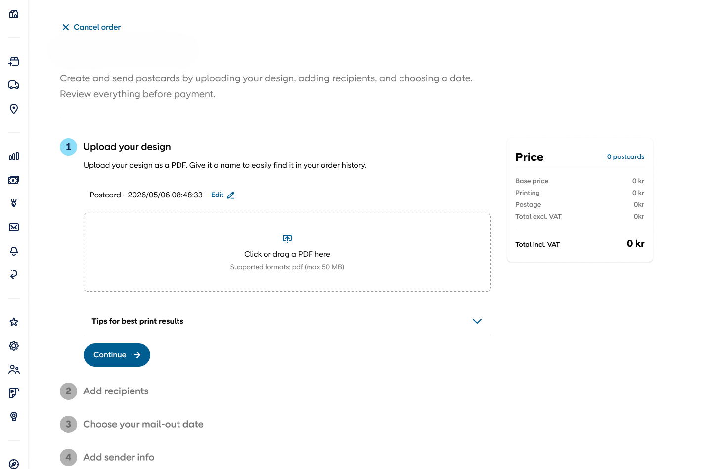
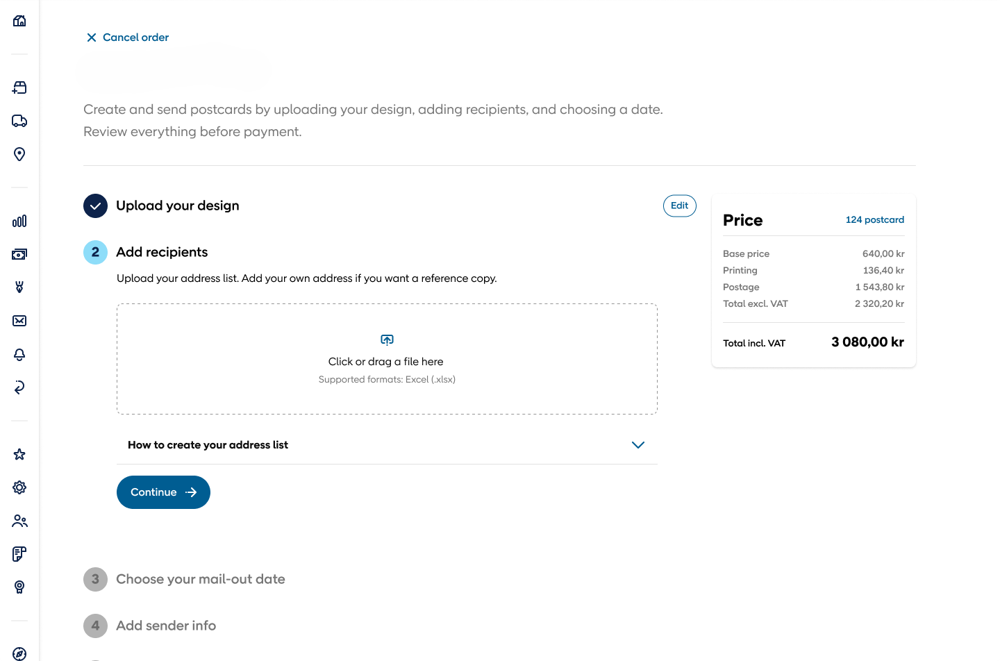
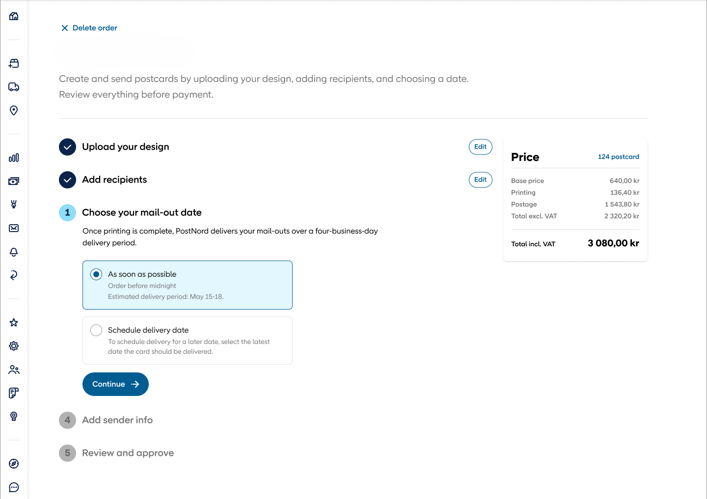
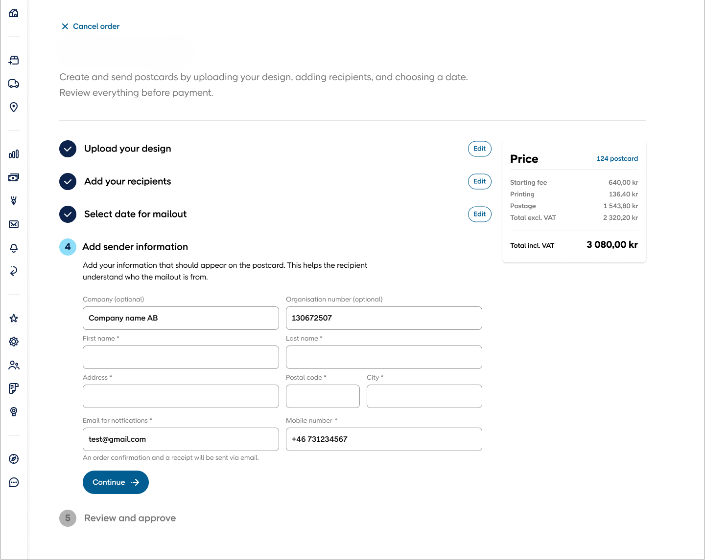
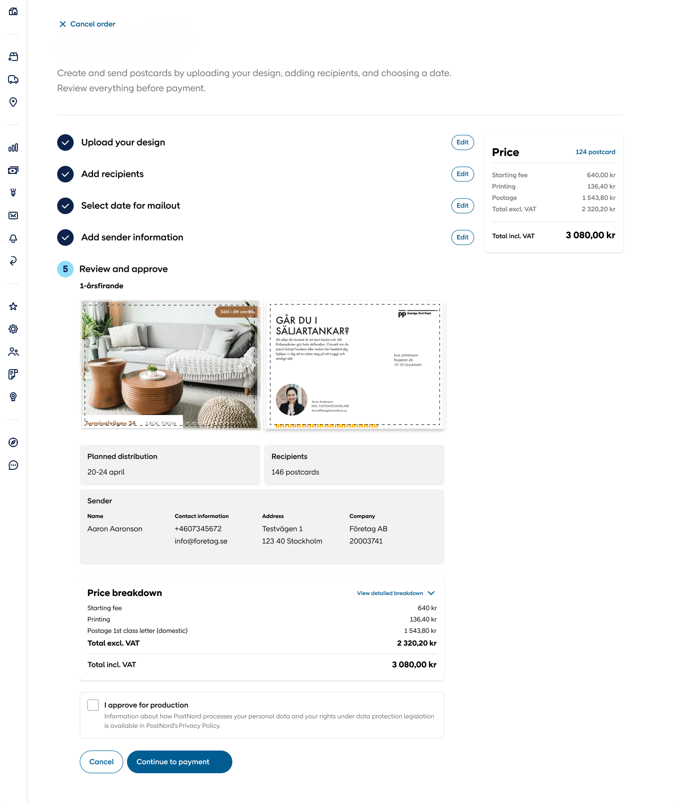
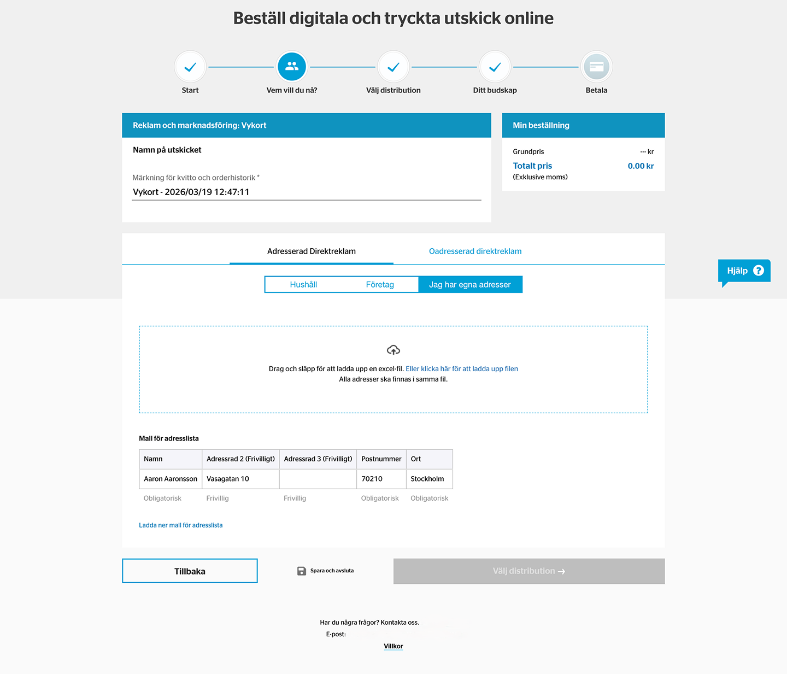

A professional UX design project completed during my internship with the Customer Experience UX team at a company.
During my internship on the Customer Experience team at a large logistics and delivery company, I worked alongside two other UX interns to improve and redesign a digital service used by their customers. My work covered user research, wireframing, prototyping, UX writing, responsive UI design, and close collaboration with developers. The project gave me real experience designing within an existing large scale design system, for real users and real product constraints.
NDA: Due to a confidentiality agreement with PostNord, specific details about the product, users, and final solution cannot be publicly disclosed.
Due to a confidentiality agreement, certain product details, research findings, interfaces and company-specific information have been omitted or recreated for this portfolio. This case study focuses on my design process, responsibilities and professional learnings.
The existing product had a few spots where users ran into some challenges that they shouldn't have. Our goal was to figure out exactly where those pain points were, understand what was already working well so we didn't undo it, and redesign the key interactions to feel clearer and easier to complete.
Working inside an established product also meant this wasn't a blank slate. Every decision had to balance user needs against business requirements, existing design patterns, and what was actually technically feasible to build.
How might we make the experience clearer and easier to navigate while reducing unnecessary challenges and complications for users?
Users benefited from clearer guidance and a more structured flow through the experience.
The timing and clarity of information played an important role in helping users understand what to do next.
Some interactions could be simplified to make the overall experience feel more natural and effortless.
These findings became the foundation for the design decisions that followed with the future steps.
Based on the research findings, I explored different approaches to simplify the experience and make the key journey more intuitive. I started by mapping the user flow and creating low fidelity wireframes, which let me focus on structure, hierarchy, and interactions before moving into visual design.
Working alongside the other UX interns, we explored and compared different solutions, iterated based on feedback, and gradually developed the strongest direction into more detailed wireframes.
Focus areas
User flow · Information hierarchy · Navigation · Interaction · Content placement
Specific flows and wireframes are not shown due to NDA.
Research
Ideation
Wireframes
Prototype
The final direction focused on creating a clearer visual hierarchy, simpler interactions, and a more consistent experience across the feature. I translated the validated wireframes into high fidelity UI while working within the company's design system and considering responsive behaviour across desktop and mobile.
A key part of the process was balancing visual decisions with usability, accessibility, content clarity, and technical feasibility. I also worked closely with developers to make sure the final designs could be implemented effectively and that important interaction states were accounted for.
Key design considerations
Visual hierarchy · Responsive design · Design system · Accessibility · UX writing · Interaction states · Developer feasibility
Due to NDA restrictions, the original product screens cannot be displayed. Visuals below shown are recreated or sanitised representations for portfolio purposes.





*Visuals shown are recreated or sanitized representations created for portfolio purposes.
We tested the prototype with users to understand how well the proposed experience worked in practice and to identify areas that still created confusion or friction. That feedback was used to challenge our assumptions and refine the design before moving further toward implementation.
We also ran feedback sessions with experienced UX designers and specialists within the company, using their perspectives to improve interaction patterns, UX writing, visual consistency, and accessibility.
Test → Learn → Refine → Test again
Rather than treating the first prototype as the final solution, each round of feedback helped us make more informed decisions and move closer to an experience that was clearer, more intuitive, and technically feasible.
Specific testing results and user feedback are kept general due to NDA.

This UI was specifically based on very old design techniques and lacked clarity for the customers. It was somewhat confusing and used to create unnecessary challenges for the users while using the product.
User feedback helped us identify areas where the experience could be clearer, more intuitive, and easier to navigate. Through interviews and concept testing, we were able to validate our ideas, understand how users interpreted different parts of the experience, and identify areas that needed further refinement. The feedback directly influenced several design and content decisions throughout the process.
The feedback also highlighted how small details can significantly influence the overall experience. Users reacted differently to wording, information placement, and the number of steps required to complete an action, which helped us look beyond the visual design itself. These observations encouraged us to refine the flow and simplify certain interactions.
In this new design, we changed the design flow quiet a bit. We went from horizontal flow to a vertical flow making it look like actual steps, user needs to complete to get to the end of the process and complete the task. We removed the unnecessary things which were creating confusion for no reason, and made the design minimalistic and simple for better user experience.
Working on this project gave me a much deeper understanding of how UX decisions are made in a professional product environment. I learned that good design is rarely about finding the perfect solution immediately. It is about questioning assumptions, listening to users, communicating with developers and stakeholders, and continuously refining the experience.
The project also changed how I think about collaboration. Working within a large UX team and closely with developers showed me how valuable it is to bring in different perspectives early, especially when a design needs to work within an established design system and real technical constraints.
Research → Understanding real user needs before designing
Collaboration → Working closely with UX designers and developers
Iteration → Designing, testing, learning and improving rather than stopping at the first solution
My biggest takeaway:
Good UX is not just about making an interface look better. It is about making thoughtful decisions that work for users, the business, and the people who have to build the product.
I learned that understanding users goes beyond simply asking what they want. Interviews and testing helped me uncover the reasoning behind their behaviour and challenge assumptions I had made during the design process. I learned to use research as a way to validate decisions rather than design based on assumptions.
Working closely with designers, developers and stakeholders taught me that good UX is rarely created in isolation. Different perspectives often revealed things I would not have considered on my own. I also learned the importance of aligning with developers early, understanding technical constraints, and communicating the reasoning behind design decisions.
I learned that the first design is rarely the best one. Testing, feedback and iteration helped me become more comfortable questioning my own decisions and making changes based on evidence. Instead of trying to get everything right immediately, I learned to design, test, learn and refine continuously.
Some project information has been intentionally omitted or recreated due to confidentiality requirements. The purpose of this case study is to demonstrate my UX process, problem-solving approach and experience working within a professional product team.